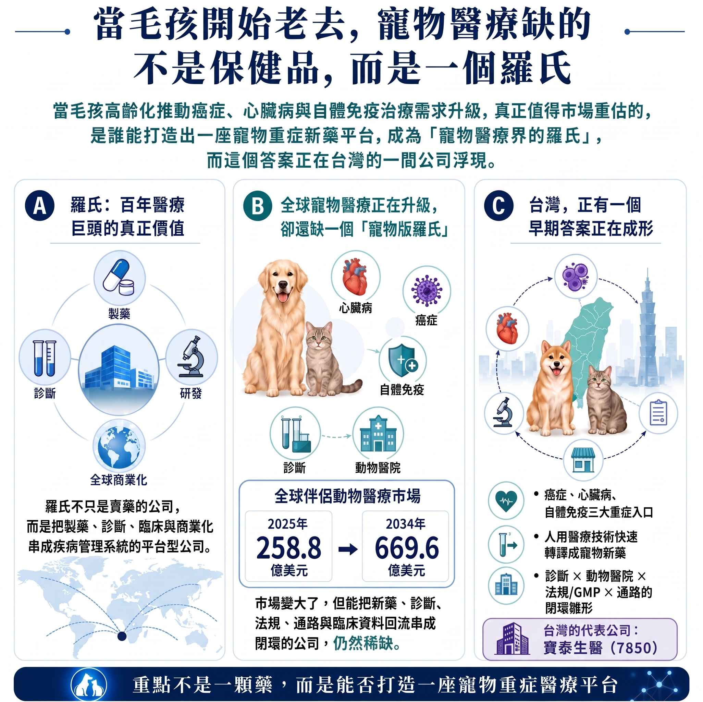
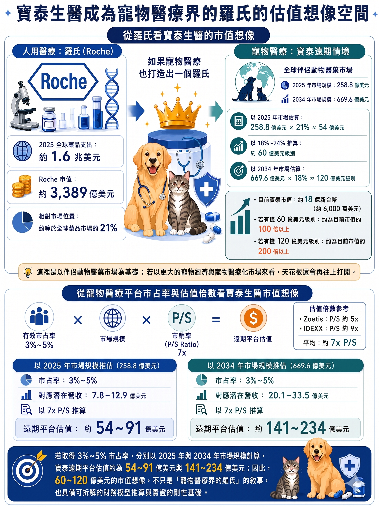
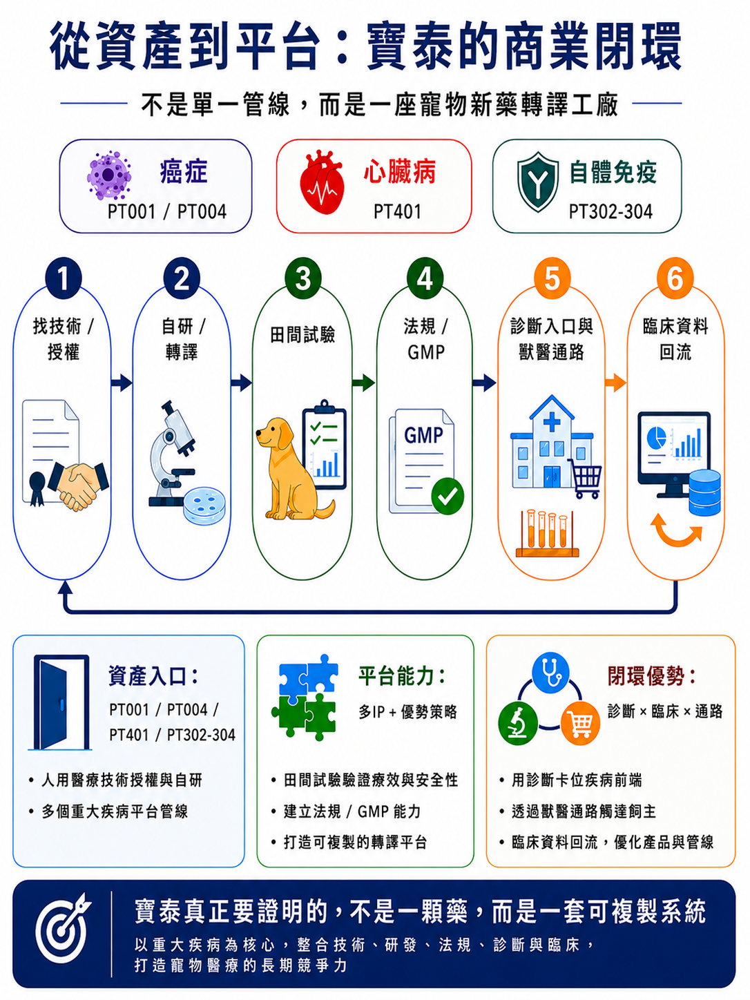

當毛孩高齡化趨勢推動癌症、心臟病與自體免疫等重症治療的需求升級，市場的長期觀察核心，在於誰能率先打造一座寵物重症新藥平台，成為『寵物醫療界羅氏』。而這一改寫行業格局的答案，正於台灣的一家生技公司加速浮現。
分享這篇分析
把這篇文章轉給關注生技醫藥、公司研究或資本市場的朋友。
羅氏（Roche）不是一家普通的大藥廠。
這家超過百年歷史的全球醫療巨頭，真正厲害的地方，不只是擁有許多重磅藥物，而是把製藥、診斷、研發、臨床開發、法規、全球商業化與疾病管理串成一個完整系統。也因為如此，羅氏在人類醫療市場中扮演的角色，早已不只是「賣藥的公司」，而是具備「診斷伴隨治療」與「全生命週期管理」能力的平台型醫療公司。
這才是羅氏真正的核心壁壘與估值溢價來源。
但有趣的是，相較於人類醫療早已誕生如羅氏般的平台型巨頭，全球寵物醫療領域迄今仍缺乏同等量級的整合者。
隨著毛孩高齡化、寵物擬人化與飼主醫療支付意願的顯著提升，寵物醫療正在從食品保健、疫苗與基礎用藥，加速跨入癌症、心臟病、自體免疫、慢性病與老年照護等重症治療領域。在此市場升級的關鍵點，尚無企業能將『寵物新藥、診斷檢測、獸醫臨床、法規轉譯、GMP製造、商業通路與臨床數據回流』完整串聯，形成具備高度防禦力的商業閉環。
那麼，誰有機會填補這個缺口？
台灣登錄興櫃的寶泰生醫（7850），正以其獨特的商業模式回答這個問題。
寶泰生醫真正值得市場重新理解的地方，不只是它有 PT001、PT401 等寵物新藥管線，更在於它正在建構一套「人類新藥轉譯寵物醫學平台」，嘗試把人用醫療中相對成熟、風險較低的技術，轉譯到犬貓重大疾病，並透過田間試驗、法規、GMP、獸醫院通路與診斷資料回流，形成一套寵物新藥開發與商業化平台。
這也是寶泰生醫在當前資本市場中，最核心的價值錨點與值得長期追蹤的投資命題。

一、寵物醫療最巨大的機會
過去談寵物經濟，市場最熟悉的是食品、用品、保健品。但真正讓寵物醫療估值升級的，是另一個變化：寵物開始高齡化，毛孩從寵物變成家人。
當寵物只是寵物，消費者買的是陪伴。當寵物變成家人，飼主願意支付的就不只是保健，而是治療選擇。癌症怎麼辦？心臟病怎麼辦？免疫疾病怎麼辦？這些問題，才是寵物醫療下一階段真正的市場。
根據Grand View Research，全球伴侶動物醫藥市場2025年約258.8億美元，2034年預估達669.6億美元，年複合成長率約11.22%。
問題是：市場升級了，產業結構卻沒跟上。現在的寵物醫療有四個明顯缺口：
- 缺專為犬貓重大疾病設計的新藥——很多治療仍依賴人用藥經驗。
- 缺診斷與治療整合——有診斷但治療不足，有治療概念但缺乏標準化路徑。
- 缺法規與臨床轉譯能力——人用技術不能直接搬到犬貓身上。
- 缺通路閉環——藥做出來還不夠，需要獸醫院、飼主教育、治療流程與長期追蹤。
這就是為什麼寵物醫療缺一個「羅氏」——不是缺一家更大的寵物藥公司，而是缺一個能把重大疾病解決方案系統化的平台型公司。
二、為什麼寵物醫療需要羅氏？因為系統才會創造市值
重症醫療和保健品最大的差別是：保健品靠品牌、通路、行銷就能賣；重症醫療不行。它需要一整套系統——診斷工具、治療方案、法規路徑、獸醫院採用、飼主付費意願，以及真實世界資料。
這就是羅氏最有價值的地方。2025年，羅氏集團銷售額達615億瑞士法郎，製藥業務477億、診斷業務138億，研發投入122億。羅氏真正強的不是單一產品，而是藥物、診斷、研發與商業化之間形成的系統。
一顆藥會過專利期，一條管線會有失敗。但如果一家公司建立的是系統，它就可以不斷把新的藥、新的診斷放進同一條價值鏈裡放大。
這也是為什麼寶泰生醫值得被放在「結構」而不是「規模」的角度理解。
寶泰目前尚未達到羅氏的規模與體量，但是他已經開始有了羅氏的結構對稱性的樣子，抓住全球寵物醫療正在進入一個需要平台型整合者的時代。把新藥、診斷、獸醫院、法規與通路串起來，並有機會取得下一階段寵物醫療的平台地位。
今天動物健康市場不是沒有大公司——Zoetis、IDEXX、Elanco都已經證明動物健康可以打造數百億美元級別的公司。但真正稀缺的是：在高齡寵物重症醫療裡，把新藥、診斷、法規、獸醫臨床與商業通路串成一套疾病解決方案的公司。
寶泰目前推進的 PT001、PT401，以及後續犬貓癌症、自體免疫等管線，並不只是單純的產品開發，而是有機會透過獸醫臨床、檢測診斷與資料回流，逐步建立寵物界的「精準重症醫療閉環」，這也是寶泰補足現有全球寵物醫療四大缺口的重要切入點。
這才是寶泰生醫真正值得市場追蹤的地方。
三、寵物用藥的高資本效率：一條更短的轉譯路徑
很多人聽到寵物新藥，第一個反應是：市場太小、藥價不高、飼主不願付錢。這個直覺只對了一半——寵物用藥市場的確比人用藥小。但真正有意思的地方是：它可能用更低成本、更短週期，完成人用醫療難以快速完成的事。
根據 HealthforAnimals 的統計數據，美國伴侶動物新活性成分藥物的平均研發週期僅約 6.5 年，平均投入資金約 2,250 萬美元（高成本極端案例約為 6,200 萬美元）。相比之下，人類新藥開發動輒耗時10年以上，且需挹注數億至數十億美元。
寵物用藥不是沒有門檻——它有法規、臨床、製造、通路要求。但它也不像人用藥那樣，必須花數十年、數十億美元、全球大型臨床才能開始證明價值。而是走一條更短、更輕、更接近臨床現場的新藥轉譯路徑。
這正是寶泰生醫展現平台差異化優勢的關鍵所在。寶泰避開了從頭篩選化合物分子、動輒耗資億萬的傳統重資產模式，而是開闢了一條『資產輕量化』與『去風險化』的轉譯新路。
其戰略核心在於將人類醫療中已進入臨床、通過安全性驗證的成熟資產，平移並轉譯至犬貓重大疾病。這使寶泰能直接越過早期最為燒錢且失敗率極高的研發階段，隨後透過縝密的目標動物試驗、法規攻防及獸醫臨床通路的閉環，將高價值的人用技術轉化為寵物醫療市場的剛需產品。
寶泰所掌握這條轉譯路徑，就更有機會用相對更高的資本效率，創造出平台型醫療公司的價值。
表1、人用藥與寵物用藥的差異比較，寵物用藥如何做到低成本與高效率
| 比較項目 | 人用藥 | 寵物用藥 |
|---|---|---|
| 開發成本 | 常見估計可達數億至數十億美元級別 | 伴侶動物新活性成分藥物平均約2,250萬美元，較高案例約6,200萬美元 |
| 開發週期 | 常需 10 年以上，且後期臨床昂貴 | 美國伴侶動物新藥平均約 6.5 年 |
| 臨床驗證 | 大型、多中心、跨國、受試者數龐大 | 以目標動物安全性、有效性與田間試驗為核心 |
| 法規路徑 | IND → Phase I/II/III → NDA/BLA | 美國 FDA 之新獸藥（NADA）有條件新獸藥之核准標準 ；台灣需依循本土獸醫藥品管理與田間試驗之剛性法規規範 |
| 支付決策 | 醫院、醫師、保險、健保、藥品福利管理者、指南 | 獸醫院、飼主、通路教育、疾病急迫性 |
| 成功關鍵 | 大型臨床與支付體系 | 目標動物適用性、獸醫接受度、飼主支付意願、通路滲透 |
| 平台價值 | 來自新藥研發、專利、適應症擴張與全球商業化 | 來自人用技術轉譯、田間試驗效率、獸醫通路與資料回流 |
四、寶泰為什麼像羅氏？不是規模，而是結構
那麼，為什麼是寶泰？
羅氏之所以能奠定其行業巨頭地位，核心不在於單純的製藥或市值體量，而是在於其獨特的結構。寶泰現階段規模雖無法與羅氏同日而語，但公司絕非僅著眼於單一寵物新藥管線的開發；相反地，寶泰正於寵物醫療市場中，加速搭建一套與羅氏底層邏輯相仿，卻具備『高資本效率、敏捷迭代、且深度扎根獸醫臨床現場』的輕量化閉環。
表2、羅氏與寶泰生醫的相似處：閉環結構的組成
| 對比項目 | 人用醫療的羅氏 | 寵物醫療的寶泰生醫 |
|---|---|---|
| 核心定位 | 醫藥 × 診斷 × 疾病管理的全球平台 | 寵物新藥 × 診斷 × 獸醫臨床 × 通路的轉譯平台 |
| 產品核心 | 腫瘤、免疫、血液、眼科等重大疾病藥物 | PT001 癌症疫苗、PT401 犬心臟病基因療法、PT004/PT302-PT304 犬貓癌症、自體免疫管線 |
| 診斷入口 | 診斷業務協助疾病分型、早期辨識與治療決策 | 牧騰於檢測、診斷及再生醫療領域的技術，整合既有的獸醫院通路網絡，全方位錨定寵物醫療的臨床第一線入口 |
| 臨床場景 | 醫院、醫師、臨床試驗中心 | 動物醫院、田間試驗、獸醫臨床回饋 |
| 法規與製造 | 全球藥證、GMP、臨床與商業化能力 | 與永鴻合作強化 GMP 製造、法規輔導與藥品通路資源 |
| 商業化槓桿 | 全球市場、醫院准入、診斷與用藥閉環 | 獸醫院網絡、寵物用品通路、飼主教育與治療流程 |
| 資料回流 | 臨床資料、診斷資料與疾病管理資料持續支持下一代產品 | 田間試驗、獸醫院端使用經驗、診斷資料與治療結果回流，支持後續管線開發 |
寶泰 與 羅氏 兩家公司真正相似的地方，不在規模，而在結構。
若以人類醫療巨擘羅氏（Roche）作為戰略參照，寶泰正於寵物醫療領域實踐相同的宏大藍圖：以精準診斷鎖定高齡寵物的重症缺口、用創新藥物提供臨床治療選擇、以田間試驗與法規准入築起信任壁壘，並透過獸醫院與商務通路將醫研解方推向全球市場。
當你仔細觀察閱讀寶泰的財報、法說報告與近年的佈局，你會發現寶泰的真實結構更接近：
新藥資產 + 診斷入口 + 獸醫臨床 + 法規製造 + 商業通路 + 市場回饋，
而這才是「寵物醫療的羅氏」該有的樣子。
五、若寶泰成為寵物醫療界的羅氏，這個生態位階將展現多大的資本磁吸效應？
寵物醫療界真的誕生一個羅氏，本身應該將是一個數百億美元級別的平台公司，來自它在整個寵物重症醫療價值鏈中的位置，這也是寶泰生醫真正值得被重新理解的地方。
首先，以醫療巨頭羅氏為參照起點。
人用醫療方面，羅氏市值約 3,389 億美元。若以 2025 年全球藥品支出約 1.6 兆美元，從羅氏市值約等於全球藥品市場的 21%。
寵物醫療方面，全球伴侶型動物醫藥市場 2025 年約 258.8 億美元。如果未來寵物醫療也出現一個平台型公司，並取得類似「羅氏之於人用藥市場」的相對位置：
以 2025 年市場 258.8 億美元 × 21% 計算，約為 54 億美元。
若用 23%–24% 估算，約為 60 億美元級別。
換言之，寵物醫療界『羅氏』的遠期平台估值，保守將對標 60 億美元（約新台幣 1,800 億元）以上的資本體量。
而從寶泰目前市值約 18 億新台幣（約6,000 萬美元）。一旦成功卡位全球寵物醫療的『羅氏』角色，將迎來資本市場結構性的估值重估與跳躍式增長。
這還只是用 2025 年伴侶動物醫藥市場當分母。
如果換成更大的寵物經濟與寵物醫療化市場，天花板還會再往上打開。
公開資料顯示，全球伴侶動物醫藥市場本身已經預估可從 2025 年的 258.8 億美元成長到 2034 年的 669.6 億美元。
若寶泰未來成功奠定『寵物醫療界羅氏』地位，以 2034 年全球伴侶動物醫藥市場預估達 669.6 億美元的規模為基準，即便僅保守賦予該平台約 18% 的生態位階，其潛在的估值天花板也將上看 120 億美元（約合新台幣 3,600 億元）。對照現階段之市值規模，其中隱含了極具想像空間的估值套利空間與長期增長動能。
表3、從羅氏看寶泰生醫的市值想像
| 比較項目 | 人用醫療：羅氏 | 寵物醫療：寶泰遠期情境 |
|---|---|---|
| 對應市場 | 全球藥品與診斷市場 | 全球伴侶動物醫藥市場 |
| 市場規模基礎 | 2025 年全球藥品支出約 1.6 兆美元；2030 年約 2.6 兆美元 | 2025 年約 258.8 億美元；2034 年約 669.6 億美元 |
| 公司市值 / 估值位置 | Roche 約 3389 億美元 | 若成為寵物醫療平台型公司，遠期可討論 50–60 億美元；若市場繼續擴大，終局可上看 120 億美元級別 |
| 相對市場位置 | 約等於 2025 年全球藥品市場的 21% | 60 億美元約等於 2025 年伴侶動物醫藥市場的 23%；120 億美元約等於 2034 年伴侶動物醫藥市場約 18% |
| 事業部結構 | 製藥 + 診斷 + 全球研發 + 商業化 | 新藥 + 診斷 + 再生醫療 + 牧騰獸醫院網絡 + 法規 / GMP + 通路 + BD 交易 |
| 關鍵問題 | 羅氏如何持續把新藥與診斷放進全球疾病管理系統 | 寶泰能否把人用醫療技術持續轉譯成犬貓重症療法，並透過獸醫院、診斷、法規與通路落地 |
表4、從寵物醫療巨頭市占率與估值倍數看寶泰生醫的市值想像
| 比較項目 | 動物醫療巨頭估值參考 | 寶泰生醫遠期平台情境 |
|---|---|---|
| 估值邏輯 | Zoetis、IDEXX 不只是動物藥公司，而是動物健康平台公司 | 若寶泰從寵物新藥公司升級為寵物重症醫療平台，估值邏輯將從單一管線切換為平台估值 |
| 價值來源 | 新藥驅動、診斷引流、通路落地、真實數據築起用戶黏性 | PT001、PT401、牧騰診斷與獸醫院資源、法規/GMP、資料回流與後續管線複製 |
| 倍數參考 | Zoetis 約 5x P/S；IDEXX 約 9x P/S，兩者平均約 7x P/S | 以 7x P/S 作為寶泰遠期平台估值的中性推算倍數 |
| 2025 年估值推算 | 動物健康平台龍頭可支撐數百億美元市值 | 2025 年伴侶動物醫藥市場約 258.8 億美元；若寶泰取得 3%–5% 有效市佔率，對應潛在營收約 7.8–12.9 億美元；以 7x P/S 推算，估值約 54–91 億美元 |
| 2034 年估值推算 | 若市場持續成長，平台公司估值天花板可進一步打開 | 2034 年伴侶動物醫藥市場約 669.6 億美元；若寶泰取得 3%–5% 有效市佔率，對應潛在營收約 20.1–33.5 億美元；以 7x P/S 推算，估值約 141–234 億美元 |
| 關鍵結論 | 動物健康市場已證明，平台型公司可享有高於單一產品公司的估值 | 寶泰 60–120 億美元的遠期市值想像，主要對應 2025 年市場下 3%–5% 市佔率與 7x P/S 的中性平台估值；進一步對標至 2034 年的市場規模，其長期估值天花板將迎來更具爆發力的上移空間 |
這個 60 億至 120 億美元的想像，我們進一步用寵物醫療「市場規模 × 有效市佔率 × 平台型公司 P/S 倍數」交叉驗證。
若以全球動保巨擘 Zoetis 與檢測龍頭 IDEXX 的平均估值乘數 7 倍市銷率（P/S Ratio）為對標基準，寶泰若能在 2025 年全球伴侶動物醫藥市場中取得 3% 至 5% 的有效市佔率，其遠期平台估值可達 54 億至 91 億美元；若將時間軸延伸至 2034 年的市場天花板，其潛在估值規模更有機會進一步上看 141 億至 234 億美元。這使得寶泰遠期 60 億至 120 億美元的市值藍圖，不再僅停留在『寵物醫療界羅氏』的戰略敘事，而是具備可依據財務模型拆解與實證的剛性基礎。

六、解碼終極生態圈：由診斷、治療至獸醫院數據回流的商業閉環
平台這件事不能只停在口號。它要落地，必須有場景。寵物醫療的場景不是大型醫學中心，而是獸醫院。誰能進入獸醫院，誰才能進入真正的寵物醫療市場。
寶泰與永鴻合作強化GMP製造與法規輔導，收購牧騰後，取得診斷事業部門和合作導入近千家動物醫院資源。寶泰已經逐漸形成平台型公司的樣子，擁有一個真正的閉環架構——從診斷找到病人 → 獸醫院承接治療 → 新藥提供解方 → 法規讓產品合規上市 → 通路讓產品擴散 → 臨床資料回流 → 幫助下一個產品開發。
一旦寶泰的平台化戰略邁向成熟，這套生態系將展現強大效應：以新藥研發為爆發點、精準診斷為流量入口、獸醫臨床為應用場景、法規轉譯為通行證、通路為價值放大器，而累積的臨床數據，則將成為驅動下一輪產品開發的燃料。

七、寶泰的真正野心：成為全球寵物醫療不可或缺的巨頭角色
寶泰現階段仍有多個關鍵節點待全面驗證，而這些挑戰，正是驅動市場未來對其進行重新評價的催化劑。
PT001 的田間試驗結果，將驗證寶泰能否把人用成熟技術轉譯成寵物癌症治療；PT401 的臨床訊號與法規進展，將決定寶泰能否打開犬心臟病基因療法的想像空間；而自體免疫與後續犬貓癌症管線，則會影響寶泰能否從單一產品公司，走向多管線平台公司。
更重要的是，牧騰與獸醫院網絡的整合，將決定寶泰的通路是否只是銷售端，還是能進一步成為診斷入口、臨床驗證與市場滲透的平台。
換句話說，寶泰真正要證明的，絕非僅是單一產品管線的成敗，而是其底層商業模式的『平台化驗證』：把人用醫療技術轉譯成犬貓重大疾病療法，再透過診斷、獸醫院、法規/GMP、通路與臨床資料回流，形成一套可複製的新藥轉譯平台。
一旦 PT001 或 PT401 任何一項管線在法規准入與商業化上成功闖關，資本市場見證的絕非僅是單一產品的商業成功，而是寶泰這套『人用新藥轉譯寵物醫學平台』的底層邏輯獲得全面實證。此後，後續管線的法規合規成本、臨床研發風險、通路開發及市場教育成本，皆將迎來結構性下降。
這才是「寵物醫療界羅氏」真正的核心：不是一顆藥，而是一座可以持續孵化、驗證、推進與商業化產品的新藥轉譯工廠。
寶泰現階段仍處於平台發展的早期，仍待時間全面實證其價值。然而，只要其首條核心管線成功走通、首個治療場景獲獸醫臨床通路採用、首款產品確立其法規與商業化範式，資本市場對寶泰的評價邏輯，將迎來結構性的根本切換。
從「寵物新藥公司」，變成「寵物重症醫療平台」；從「單一管線故事」，變成「可複製的新藥轉譯工廠」；從「台灣興櫃公司」，變成有機會切入全球寵物醫療升級浪潮的平台型公司。
這，才是寶泰生醫真正值得市場重新理解的原因。
資料與發佈提醒
本文為產業趨勢與公司定位與價值情境分析，關於公司的交易、資產、臨床進展數據與資本效率皆以公開資料整理，不構成任何投資建議。
參考來源
- https://www.grandviewresearch.com/industry-analysis/companion-animal-medicine-market-report https://www.roche.com/investors/annualreport25 https://companiesmarketcap.com/roche/marketcap/ https://finance.yahoo.com https://www.marketbeat.com/compare-stocks/ https://www.healthforanimals.org/reports/innovation-report/ https://www.fda.gov/animal-veterinary/development-approval-process/new-animal-drug-applications https://www.fda.gov/media/106055/download https://www.moa.gov.tw https://law.moa.gov.tw/LawContent.aspx?id=GL001397 https://www.grandviewresearch.com/industry-analysis/veterinary-oncology-market https://www.grandviewresearch.com/industry-analysis/veterinary-cardiology-market-report https://www.grandviewresearch.com/industry-analysis/companion-animal-diagnostics-market https://www.gminsights.com/industry-analysis/pet-cancer-therapeutics-market https://www.gminsights.com/industry-analysis/veterinary-autoimmune-disease-therapeutics-market https://www.iqvia.com/insights/the-iqvia-institute/reports/the-global-use-of-medicines-2026 https://www.iqvia.com/newsroom/2021/04/global-medicine-spending-to-reach-16-trillion-in-2025-excluding-spending-on-covid-19-vaccines-accord https://www.biotech-edu.com/protect-over-the-counter/ https://www.genetinfo.com/investment/featured/item/88559.html https://www.mountainvet.com.tw/regenerative/%E7%89%A7%E9%A8%B0%E7%94%9F%E7%89%A9%E8%88%87%E5%AF%B6%E6%B3%B0%E7%94%9F%E9%86%AB%E7%AD%96%E7%95%A5%E7%B5%90%E7%9B%9F-%E6%90%B6%E6%94%BB%E5%B9%B4%E5%8D%83%E5%84%84%E6%AF%9B%E5%AD%A9%E5%95%86%E6%A9%9F/ https://www.beileybiofund.com/blogs/portfolio-news/protect20260506 https://www.cnyes.com/twstock/7850 https://www.tpex.org.tw/zh-tw/esb/trading/info/stock-pricing.html?code=7850
引用本文
若在簡報、報告或社群討論引用，建議附上 Drugnews 原文連結。
Drugnews 編輯部，〈邁向「寵物醫療界羅氏」的寶泰生醫〉，Drugnews｜藥時事，2026/06/25，https://drugnews.com.tw/articles/2026-06-25-protect-pet-medical-roche-platform.html
社群原文
讀完這篇，下一步看
這三篇會優先依主題、標籤與產業脈絡推薦，幫你把同一個問題讀得更完整。

一篇文章講通現在的“禮來”併購邏輯
💡 四個月，五筆交易，若把交易上限全部加總，Eli Lilly 在 2026 年前四個月已經丟出超過 187 億美元的併購火力：1 月的 Ventyx Biosciences、2 月的 Orna Therapeutics、3 月的 Centessa Pharmaceuticals、4 月的 Cro…

拒絕被併購的 RevMed：Biotech 的獨立時代
圍繞 Revolution Medicines（RevMed）的併購傳聞，一直沒有真正停過。

半年併購 1,340 億美元：Big Pharma 到底在搶什麼？
2026 年才過一半，全球製藥業的併購節奏已經快到讓人有點恍神。